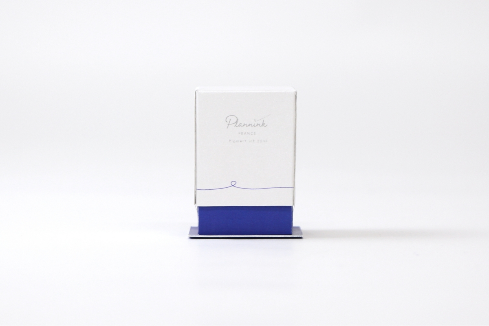
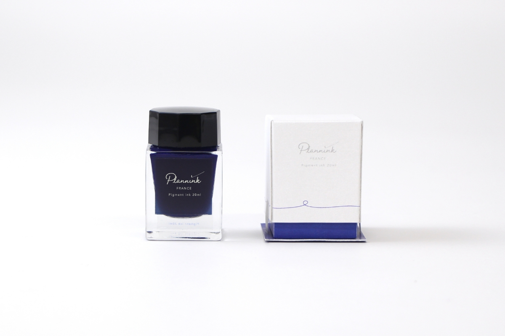
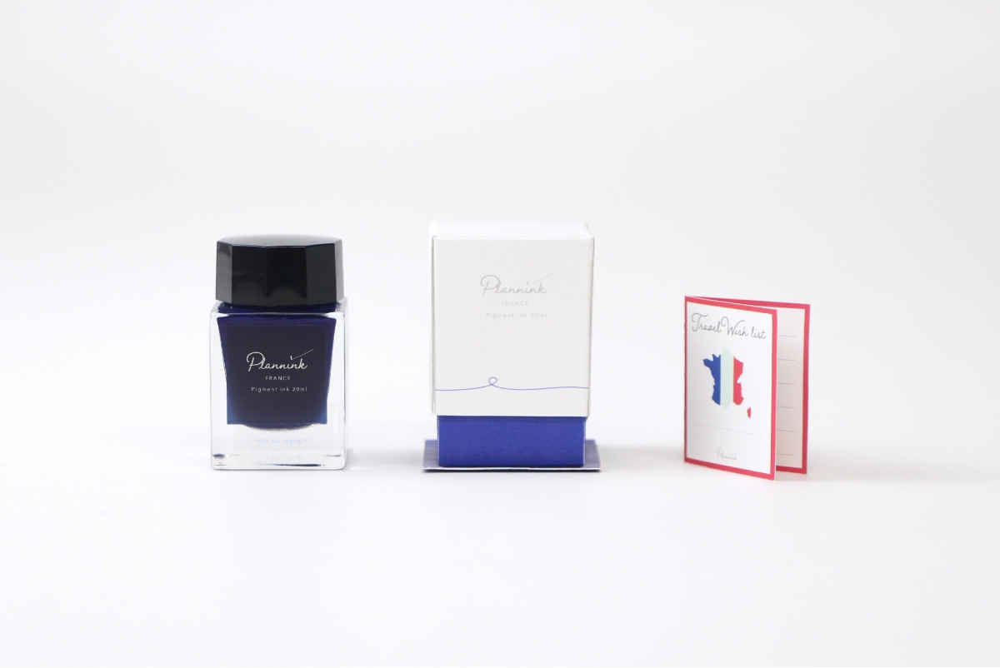
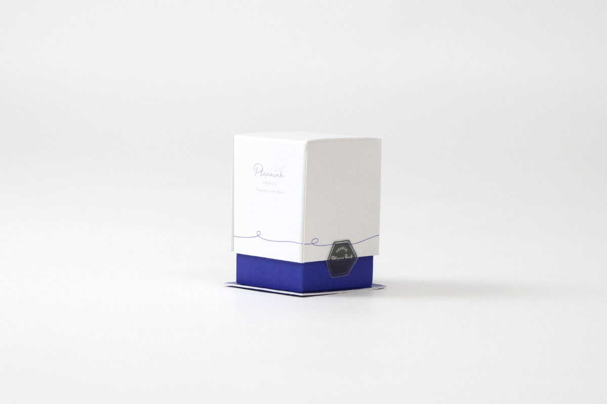

Plannink
packagedesign : logo
illustrator / curious metal : Mr.B
2022 08
『海外旅行の予定を立てるためのインク』
各国の国旗をモチーフとした色を選び
シリーズ展開された商品の中で、
フランスバージョンのパッケージを制作。
記憶に深く刻まれる「書く」という行為から
海外旅行の実現が難しい昨今でも「行ってみたい」という気持ちが絶えることなく育んでほしい。
そんな願いを込め、「planning」と「ink」を
組み合わせた、「plannink」という商品名を生み出しました。
蓋に描かれた一本の線は、日本と海外との境界線・地平線・稜線でもあり、またそれを超えて全てが結ばれているのだというメッセージでもあります。
箱の中には、商品とともに「Travel Wish list」が
詰められていて、実現したい海外旅行を想像し、
楽しみと共に叶えていただきたい。
重要なインクの色へのこだわりもしっかり記し、
箱の全部の面も商品もリストも全てに思いが詰まった作品です。



